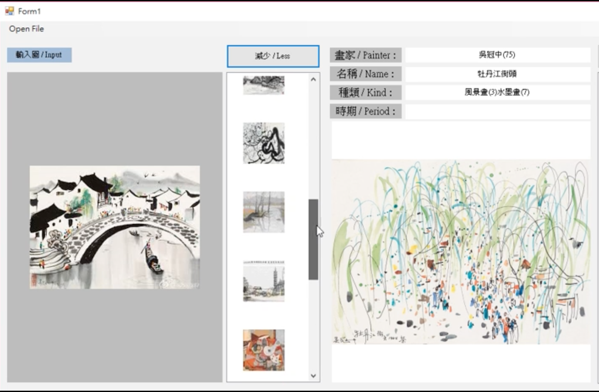
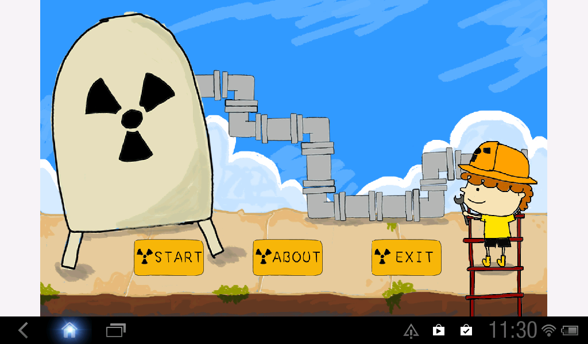
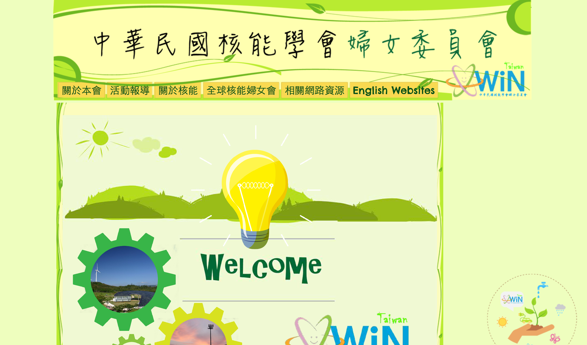

Hello,
廖育萱 Liao Yu-Syuan
樂於學習新知， 探索問題並解決問題。 - 充滿無限可能的軟體工程師。
經歷
自駕車軟體工程師
工業技術研究院 機械所
研究領域為SLAM(Simultaneous localization and mapping)，
主要負責的項目為定位(Localization)，
模組建構於ROS的架構上，並運行於Ubuntu。
此模組於自駕車系統中為告訴系統目前車子位在地圖的哪裡。
September 2017 - Present
核能知識電⼦遊戲APP之開發
原能會產學合作
運行於Android平台上，為具有知識性和娛樂性的健康遊戲，且適合各年齡層一起使用。
將輻射與核能的基本常識融入到行動裝置的遊戲中，目的為使一般使用者在閒暇娛樂時，
也能學習到輻射與核能的相關知識，達到寓教於樂的目的。
2014
網站設計
中華婦女委員會核能學會
於google協作平台上開發設計。
2014
學歷
國立中央大學
資工所, 碩士
⼈工智慧與圖形識別實驗室
論文: 融合多特徵與個⼈化模組之畫作推薦系統
相關專業課程:
圖形識別/電腦視覺/智慧型監控系統與實驗/類神經網路/計算型智慧/虛擬實境
September 2015 - July 2017
國立宜蘭大學
電資學⼠班(資訊工程組), 學士
RFID實驗室
專題: 做中學，學中做，育樂稻米種植體驗裝置系統
相關專業課程:
計算機概論/物件導向程式設計/作業系統原理/演算法導論/計算機組織 資料結構/行動裝置程式設計/計算機圖學/影像視訊處理
September 2011 - June 2015
專業技能
程式語言:
其他:
- OpenCV
- PointCloud Library
- ROS
- Linux, Ubuntu
- Git
作品集
自動駕駛車-定位系統
- C++, Python, ROS, PCL, Ubuntu
- 動態定位及動態讀取地圖
- 多個光達感測器校正, 光達與相機校正

融合多特徵與個人化模組之畫作推薦系統
- C++, C#, OpenCV, Windows
- Demo video
- 藉由擷取畫作的特徵，再透過特徵的相關性排序(Rank)後， 即可推播出資料庫中與詢問的畫作相似風格的畫作給予使用者。

核能知識電⼦遊戲APP
- Java, Android
- Demo video
- 具有知識性和娛樂性的健康遊戲，且適合各年齡層一起使用。

中華婦女委員會核能學會 網站設計
- google協作平台
- 網頁製作及排版

做中學學中做，育樂種植稻米體驗裝置系統
- Java, Android
- Demo video
- 藉由遊戲學習種稻的小知識，幫助大家了解稻米的重要性。
個人榮譽
- 工研院院部 傑出研究獎-全天候多車型自駕車技術(銅牌獎), 2019
- 工研院機械所 傑出創新獎-全天候多車型自駕車技術, 2018
- 大專院校物聯聯網暨RFID專題競賽獲全國第三名, 2014
- 香港-台灣⼤專學界物聯網大獎中獲得最具潛質應⽤大奬和最具創意大奬, 2014
- 第一屆兩岸⼤學生創新競賽獲三等獎, 2014